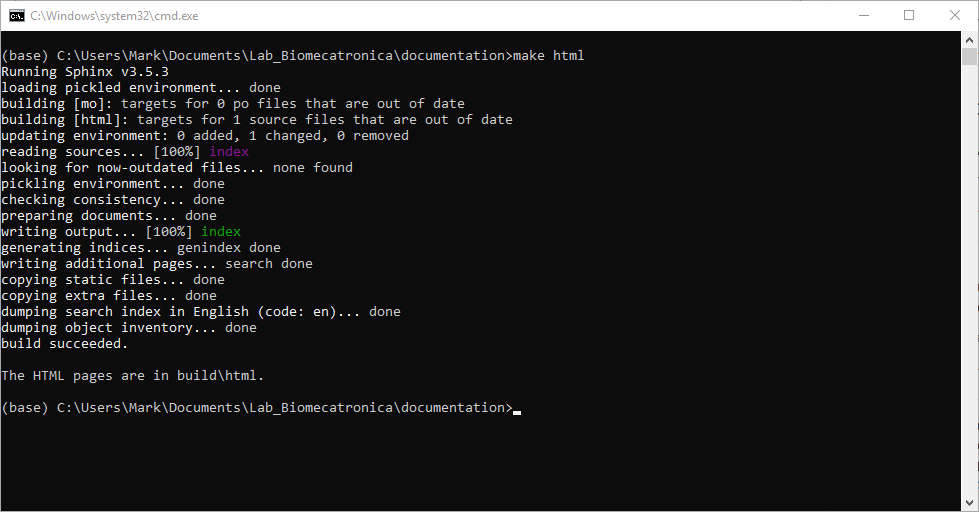

First Build¶
We are going to see the basic project structure and build it for the first time.
Go to your project directory and open the
sourcefolder.For now, you should know that there are 4 items.
In this same folder, we are going to create our first file. This document will be the introduction of our documentation. Open
Notepad ++and write an introduction of your own project. Once you are done, save it. Keep in mind that Sphinx needs titles for each section. So every file you write should contain this.====== Title ====== write your content here
Now give it the name you want, but make sure you specify the extension
.rstYour folder should look like this now, with your new introduction file with
.rstextensionRight now, our introduction doesn’t belong anywhere. We need to indicate Sphinx to be included in the build. To do so, open the index file.
The first time you open the
index.rstyou will see the next structure that comes by default. What you see is called a toctree, which will be our menu, yours might look as follows.. toctree:: :maxdepth: 2 :caption: Contents:
We need to replace the existing one with this one. This way we can add sections to our menu, in this case we added an
Introductionpart... toctree:: :maxdepth: 2 :caption: Table of Contents :name: maintoc :includehidden: .. toctree:: :caption: Introduction :maxdepth: 1 :hidden:
Under the
Introductionpart add the name of the file containing your introduction, notice that you don’t need to include the.rstextension here, then, save it.Open the CMD.exe terminal using Anaconda Navigator.

Change to your project directory and run
make htmlto build your project for the first time.make html
Now, navigate to your
htmlfolder containing the compiled files.Open the
index.html
Congratulations, you made your first build and should see something like this.
Click on your introduction on the left menu to see it.